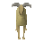

Trollheim
Location at 2892, 3678 · Kingdom of Asgarnia
Open on the world map → Open in knowledge graph → Below: Trollheim (underground)
NPCs
| NPC | Level | Spawns | Notable drops |
|---|---|---|---|
| 71 | 1 | ||
| 71 | 1 | ||
| 69 | 1 | ||
| 69 | 1 | ||
| 69 | 1 | ||
| 68 | 1 | ||
| 68 | 1 | ||
| 68 | 1 | ||
| 68 | 1 | ||
| 68 | 1 | ||
 Mountain Goat | 5 |